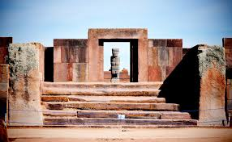
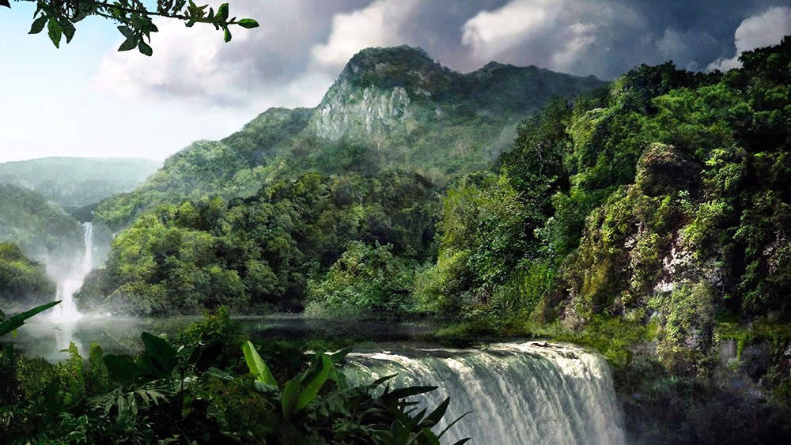
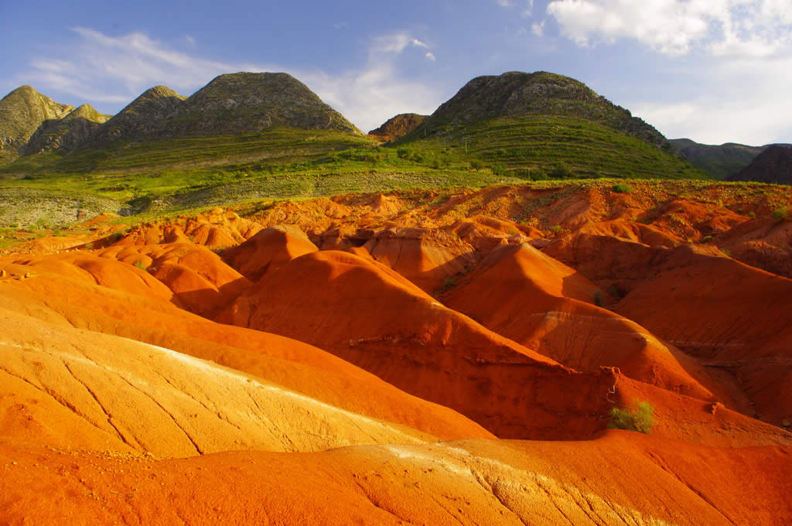
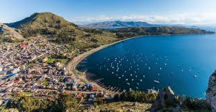

Cerro Rico de Potosi
Establecida en 1545, Potosí es la ciudad más alta del mundo a aproximadamente 13400 pies. Se convirtió en una de las ciudades más ricas y pobladas del mundo por un tiempo gracias a la enorme cantidad de plata extraída de la cercana montaña Cerro Rico.

Ruinas del Tiwanaku
Tiwanaku o Tiahuanaco es una antigua ciudad precolombina en ruinas cerca de la orilla sureste del lago Titicaca, a unos 72 km (44 millas) al oeste de La Paz . Tiwanaku es un sitio reconocido como Patrimonio de la Humanidad.

Parque Nacional de Madidi
Madidi es un parque nacional ubicado al noreste de La Paz, en la cuenca alta del río Amazonas en Bolivia. Establecido en 1995, tiene un área de 18958 kilómetros cuadrados y es uno de los parques biológicamente más diversos del mundo con 5000 a 6000 especies de flora.

Salar de Uyuni
El Salar de Uyuni, ubicado a unos 3800m sobre el nivel del mar en medio de los Andes en el suroeste de Bolivia, es el salar más grande del mundo . La sal se depositó aquí después de que un océano interior prehistórico se secara, dejando atrás un desierto de sal blanca cegadora de casi 11000 kilómetros cuadrados (aproximadamente 4086 millas cuadradas) de hasta 120 metros de profundidad. El Salar de Uyuni es la atracción turística más popular en Bolivia , una que debe verse para creerse.

Parque Nacional Toro Toro
El Parque Nacional Toro Toro ubicado al norte de Potosí es un paraíso para los amantes de la geología y la paleontología y uno de los Parques Nacionales más bellos de Bolivia. Entre las atracciones se encuentran las huellas de los dinosaurios, la caverna de Umajalanta, ruinas incas, pinturas rupestres y el impresionante cañón del Valle de Toro Toro. La altitud del parque varía entre 3600 y 1900 metros sobre el nivel del mar.

Lago Titicaca
Compartido entre Perú y Bolivia, el lago Titicaca es famoso por ser el lago navegable más alto del mundo. También es uno de los lagos más grandes del mundo con 3.232 millas cuadradas de agua y el segundo lago de agua dulce más grande de América del Sur. Con una altura promedio de 3810 metros sobre el nivel del mar, el lago Titicaca es una gran atracción turística para los amantes de la naturaleza y la historia. Como uno de los lugares más hermosos y monumentos más preciados de Bolivia, el lago Titicaca es un lugar ideal para grandes oportunidades fotográficas .